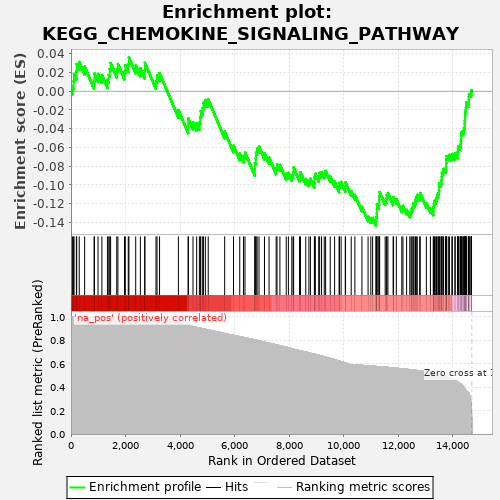
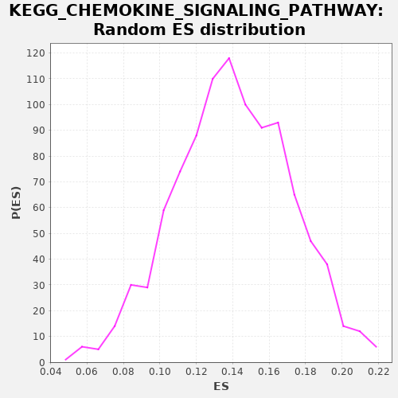

| | | Dataset | drug_embeddings_gsea |
| Phenotype | NoPhenotypeAvailable |
| Upregulated in class | na_neg |
| GeneSet | KEGG_CHEMOKINE_SIGNALING_PATHWAY |
| Enrichment Score (ES) | -0.1432597 |
| Normalized Enrichment Score (NES) | NaN |
| Nominal p-value | NaN |
| FDR q-value | 1.0 |
| FWER p-Value | 0.0 |
Table: GSEA Results Summary

Fig 1: Enrichment plot: KEGG_CHEMOKINE_SIGNALING_PATHWAY
Profile of the Running ES Score & Positions of GeneSet Members on the Rank Ordered List
| PROBE | GENE SYMBOL | GENE_TITLE | RANK IN GENE LIST | RANK METRIC SCORE | RUNNING ES | CORE ENRICHMENT | | 1 | CX3CR1 | | | 52 | 1.000 | 0.0050 | No |
| 2 | CCL22 | | | 98 | 1.000 | 0.0105 | No |
| 3 | CCL23 | | | 109 | 1.000 | 0.0184 | No |
| 4 | CXCR3 | | | 197 | 1.000 | 0.0211 | No |
| 5 | CXCR6 | | | 208 | 1.000 | 0.0290 | No |
| 6 | CXCL3 | | | 302 | 1.000 | 0.0312 | No |
| 7 | GNG7 | | | 500 | 1.000 | 0.0262 | No |
| 8 | CXCL10 | | | 845 | 1.000 | 0.0111 | No |
| 9 | CXCL11 | | | 861 | 1.000 | 0.0187 | No |
| 10 | CCL26 | | | 991 | 1.000 | 0.0184 | No |
| 11 | CCL18 | | | 1132 | 1.000 | 0.0174 | No |
| 12 | CCL1 | | | 1335 | 1.000 | 0.0121 | No |
| 13 | CCL14 | | | 1385 | 1.000 | 0.0173 | No |
| 14 | CCR9 | | | 1421 | 1.000 | 0.0235 | No |
| 15 | PLCB4 | | | 1452 | 1.000 | 0.0300 | No |
| 16 | ADCY7 | | | 1677 | 1.000 | 0.0232 | No |
| 17 | GNG3 | | | 1719 | 1.000 | 0.0290 | No |
| 18 | CCL24 | | | 1960 | 1.000 | 0.0211 | No |
| 19 | XCL2 | | | 1991 | 1.000 | 0.0276 | No |
| 20 | CCL27 | | | 2099 | 1.000 | 0.0288 | No |
| 21 | XCR1 | | | 2122 | 1.000 | 0.0359 | No |
| 22 | XCL1 | | | 2372 | 1.000 | 0.0274 | No |
| 23 | CXCL9 | | | 2542 | 1.000 | 0.0244 | No |
| 24 | CCL3L3 | | | 2702 | 1.000 | 0.0220 | No |
| 25 | CCR8 | | | 2708 | 1.000 | 0.0303 | No |
| 26 | GNGT2 | | | 3115 | 1.000 | 0.0109 | No |
| 27 | CCL17 | | | 3154 | 1.000 | 0.0169 | No |
| 28 | GRK7 | | | 3246 | 1.000 | 0.0192 | No |
| 29 | DOCK2 | | | 3936 | 0.949 | -0.0200 | No |
| 30 | GNG11 | | | 4297 | 0.927 | -0.0369 | No |
| 31 | CCL28 | | | 4298 | 0.927 | -0.0289 | No |
| 32 | ADCY8 | | | 4472 | 0.918 | -0.0329 | No |
| 33 | ADCY3 | | | 4606 | 0.910 | -0.0342 | No |
| 34 | GNB3 | | | 4706 | 0.905 | -0.0333 | No |
| 35 | GNB5 | | | 4740 | 0.903 | -0.0278 | No |
| 36 | GNG5 | | | 4757 | 0.902 | -0.0211 | No |
| 37 | PPBP | | | 4827 | 0.899 | -0.0181 | No |
| 38 | CXCR5 | | | 4854 | 0.897 | -0.0122 | No |
| 39 | CXCL16 | | | 4925 | 0.894 | -0.0093 | No |
| 40 | GNG10 | | | 5030 | 0.889 | -0.0089 | No |
| 41 | PRKX | | | 5633 | 0.858 | -0.0429 | No |
| 42 | ADCY2 | | | 5958 | 0.842 | -0.0580 | No |
| 43 | GNG4 | | | 6186 | 0.831 | -0.0665 | No |
| 44 | PF4V1 | | | 6325 | 0.824 | -0.0689 | No |
| 45 | GNG13 | | | 6378 | 0.822 | -0.0654 | No |
| 46 | CXCL6 | | | 6738 | 0.804 | -0.0832 | No |
| 47 | CXCL5 | | | 6741 | 0.804 | -0.0764 | No |
| 48 | GRK1 | | | 6774 | 0.802 | -0.0717 | No |
| 49 | PLCB2 | | | 6783 | 0.802 | -0.0654 | No |
| 50 | GNG12 | | | 6822 | 0.799 | -0.0611 | No |
| 51 | CCL3 | | | 6892 | 0.795 | -0.0590 | No |
| 52 | CCR1 | | | 7092 | 0.785 | -0.0660 | No |
| 53 | PIK3R5 | | | 7260 | 0.776 | -0.0708 | No |
| 54 | ADCY6 | | | 7520 | 0.762 | -0.0821 | No |
| 55 | CCR3 | | | 7552 | 0.759 | -0.0777 | No |
| 56 | TIAM2 | | | 7658 | 0.754 | -0.0785 | No |
| 57 | CCR6 | | | 7890 | 0.741 | -0.0880 | No |
| 58 | ROCK2 | | | 7969 | 0.736 | -0.0870 | No |
| 59 | CX3CL1 | | | 8094 | 0.729 | -0.0893 | No |
| 60 | CCL8 | | | 8143 | 0.725 | -0.0864 | No |
| 61 | PRKACB | | | 8162 | 0.724 | -0.0814 | No |
| 62 | RASGRP2 | | | 8377 | 0.712 | -0.0900 | No |
| 63 | CCL13 | | | 8414 | 0.710 | -0.0864 | No |
| 64 | CXCL14 | | | 8606 | 0.699 | -0.0935 | No |
| 65 | CCL11 | | | 8721 | 0.693 | -0.0954 | No |
| 66 | CCL4 | | | 8777 | 0.689 | -0.0932 | No |
| 67 | CCL7 | | | 8921 | 0.681 | -0.0972 | No |
| 68 | SHC4 | | | 8929 | 0.681 | -0.0918 | No |
| 69 | GRK4 | | | 8956 | 0.679 | -0.0878 | No |
| 70 | CCL16 | | | 9081 | 0.671 | -0.0906 | No |
| 71 | CXCR2 | | | 9114 | 0.670 | -0.0870 | No |
| 72 | CCL21 | | | 9185 | 0.665 | -0.0861 | No |
| 73 | PLCB3 | | | 9283 | 0.659 | -0.0871 | No |
| 74 | RAC2 | | | 9334 | 0.656 | -0.0849 | No |
| 75 | CCL19 | | | 9503 | 0.645 | -0.0909 | No |
| 76 | GNB4 | | | 9663 | 0.635 | -0.0964 | No |
| 77 | ADCY5 | | | 9829 | 0.623 | -0.1024 | No |
| 78 | SOS2 | | | 9840 | 0.622 | -0.0977 | No |
| 79 | GRK6 | | | 9902 | 0.618 | -0.0966 | No |
| 80 | GNB2 | | | 10054 | 0.607 | -0.1018 | No |
| 81 | GNG2 | | | 10064 | 0.606 | -0.0972 | No |
| 82 | CCL25 | | | 10272 | 0.592 | -0.1064 | No |
| 83 | CCR4 | | | 10407 | 0.590 | -0.1105 | No |
| 84 | CXCR1 | | | 10665 | 0.586 | -0.1232 | No |
| 85 | PREX1 | | | 10890 | 0.582 | -0.1336 | No |
| 86 | STAT2 | | | 10991 | 0.580 | -0.1355 | No |
| 87 | GNGT1 | | | 11057 | 0.579 | -0.1350 | No |
| 88 | ADCY9 | | | 11178 | 0.577 | -0.1383 | Yes |
| 89 | ITK | | | 11188 | 0.577 | -0.1340 | Yes |
| 90 | AKT3 | | | 11209 | 0.576 | -0.1304 | Yes |
| 91 | CCR2 | | | 11212 | 0.576 | -0.1256 | Yes |
| 92 | PRKACG | | | 11214 | 0.576 | -0.1207 | Yes |
| 93 | PLCB1 | | | 11286 | 0.575 | -0.1206 | Yes |
| 94 | ELMO1 | | | 11297 | 0.575 | -0.1164 | Yes |
| 95 | PIK3CD | | | 11299 | 0.574 | -0.1115 | Yes |
| 96 | CCL5 | | | 11314 | 0.574 | -0.1075 | Yes |
| 97 | CXCL13 | | | 11516 | 0.571 | -0.1164 | Yes |
| 98 | GNAI3 | | | 11560 | 0.570 | -0.1145 | Yes |
| 99 | CXCL1 | | | 11577 | 0.569 | -0.1107 | Yes |
| 100 | PIK3CG | | | 11617 | 0.568 | -0.1085 | Yes |
| 101 | PIK3CB | | | 11808 | 0.564 | -0.1167 | Yes |
| 102 | CCR7 | | | 11824 | 0.564 | -0.1129 | Yes |
| 103 | VAV3 | | | 11925 | 0.562 | -0.1150 | Yes |
| 104 | CXCL12 | | | 12126 | 0.557 | -0.1239 | Yes |
| 105 | VAV2 | | | 12169 | 0.556 | -0.1221 | Yes |
| 106 | PARD3 | | | 12303 | 0.552 | -0.1265 | Yes |
| 107 | GNB1 | | | 12420 | 0.550 | -0.1297 | Yes |
| 108 | SOS1 | | | 12466 | 0.549 | -0.1281 | Yes |
| 109 | CXCL2 | | | 12492 | 0.548 | -0.1251 | Yes |
| 110 | GSK3A | | | 12536 | 0.547 | -0.1234 | Yes |
| 111 | GRK5 | | | 12548 | 0.546 | -0.1194 | Yes |
| 112 | NCF1 | | | 12608 | 0.545 | -0.1188 | Yes |
| 113 | NFKBIB | | | 12628 | 0.544 | -0.1154 | Yes |
| 114 | WASL | | | 12659 | 0.543 | -0.1128 | Yes |
| 115 | NRAS | | | 12693 | 0.541 | -0.1104 | Yes |
| 116 | CCR10 | | | 12783 | 0.539 | -0.1119 | Yes |
| 117 | GNAI2 | | | 12801 | 0.538 | -0.1085 | Yes |
| 118 | SHC2 | | | 13026 | 0.529 | -0.1193 | Yes |
| 119 | GNAI1 | | | 13175 | 0.523 | -0.1250 | Yes |
| 120 | CXCR4 | | | 13281 | 0.519 | -0.1278 | Yes |
| 121 | CCL20 | | | 13286 | 0.518 | -0.1236 | Yes |
| 122 | CCR5 | | | 13304 | 0.518 | -0.1203 | Yes |
| 123 | ARRB1 | | | 13323 | 0.517 | -0.1171 | Yes |
| 124 | TIAM1 | | | 13370 | 0.515 | -0.1159 | Yes |
| 125 | RHOA | | | 13398 | 0.513 | -0.1133 | Yes |
| 126 | FGR | | | 13421 | 0.513 | -0.1104 | Yes |
| 127 | SHC3 | | | 13464 | 0.509 | -0.1089 | Yes |
| 128 | PF4 | | | 13488 | 0.507 | -0.1062 | Yes |
| 129 | CSK | | | 13497 | 0.506 | -0.1023 | Yes |
| 130 | JAK3 | | | 13499 | 0.506 | -0.0981 | Yes |
| 131 | RAP1A | | | 13558 | 0.503 | -0.0977 | Yes |
| 132 | ARRB2 | | | 13581 | 0.501 | -0.0949 | Yes |
| 133 | PAK1 | | | 13591 | 0.500 | -0.0912 | Yes |
| 134 | WAS | | | 13596 | 0.500 | -0.0872 | Yes |
| 135 | PIK3CA | | | 13636 | 0.498 | -0.0856 | Yes |
| 136 | RAC1 | | | 13657 | 0.496 | -0.0827 | Yes |
| 137 | RAP1B | | | 13726 | 0.491 | -0.0832 | Yes |
| 138 | FOXO3 | | | 13751 | 0.490 | -0.0806 | Yes |
| 139 | VAV1 | | | 13753 | 0.489 | -0.0765 | Yes |
| 140 | HCK | | | 13760 | 0.489 | -0.0727 | Yes |
| 141 | ROCK1 | | | 13770 | 0.488 | -0.0691 | Yes |
| 142 | STAT5B | | | 13832 | 0.483 | -0.0691 | Yes |
| 143 | AKT2 | | | 13873 | 0.480 | -0.0678 | Yes |
| 144 | PIK3R3 | | | 13963 | 0.471 | -0.0698 | Yes |
| 145 | PIK3R2 | | | 13979 | 0.469 | -0.0668 | Yes |
| 146 | BRAF | | | 14075 | 0.460 | -0.0694 | Yes |
| 147 | CCL2 | | | 14082 | 0.459 | -0.0659 | Yes |
| 148 | CDC42 | | | 14167 | 0.446 | -0.0678 | Yes |
| 149 | HRAS | | | 14175 | 0.445 | -0.0645 | Yes |
| 150 | NFKBIA | | | 14190 | 0.442 | -0.0617 | Yes |
| 151 | PRKCB | | | 14202 | 0.441 | -0.0586 | Yes |
| 152 | PTK2B | | | 14258 | 0.432 | -0.0587 | Yes |
| 153 | CHUK | | | 14282 | 0.426 | -0.0566 | Yes |
| 154 | CXCL8 | | | 14293 | 0.425 | -0.0536 | Yes |
| 155 | BCAR1 | | | 14301 | 0.423 | -0.0505 | Yes |
| 156 | PXN | | | 14303 | 0.423 | -0.0469 | Yes |
| 157 | JAK2 | | | 14314 | 0.421 | -0.0440 | Yes |
| 158 | STAT1 | | | 14346 | 0.414 | -0.0426 | Yes |
| 159 | PTK2 | | | 14395 | 0.403 | -0.0424 | Yes |
| 160 | IKBKB | | | 14402 | 0.399 | -0.0394 | Yes |
| 161 | KRAS | | | 14429 | 0.393 | -0.0378 | Yes |
| 162 | IKBKG | | | 14430 | 0.392 | -0.0344 | Yes |
| 163 | PRKCZ | | | 14434 | 0.390 | -0.0312 | Yes |
| 164 | LYN | | | 14442 | 0.387 | -0.0284 | Yes |
| 165 | CRKL | | | 14446 | 0.386 | -0.0253 | Yes |
| 166 | PRKCD | | | 14455 | 0.382 | -0.0226 | Yes |
| 167 | SHC1 | | | 14470 | 0.375 | -0.0203 | Yes |
| 168 | MAPK3 | | | 14476 | 0.370 | -0.0175 | Yes |
| 169 | PIK3R1 | | | 14486 | 0.366 | -0.0149 | Yes |
| 170 | GSK3B | | | 14490 | 0.364 | -0.0120 | Yes |
| 171 | RAF1 | | | 14562 | 0.357 | -0.0138 | Yes |
| 172 | MAP2K1 | | | 14579 | 0.351 | -0.0119 | Yes |
| 173 | CRK | | | 14581 | 0.349 | -0.0090 | Yes |
| 174 | STAT3 | | | 14582 | 0.347 | -0.0060 | Yes |
| 175 | PRKACA | | | 14588 | 0.345 | -0.0034 | Yes |
| 176 | NFKB1 | | | 14621 | 0.322 | -0.0028 | Yes |
| 177 | MAPK1 | | | 14666 | 0.254 | -0.0036 | Yes |
| 178 | RELA | | | 14675 | 0.231 | -0.0022 | Yes |
| 179 | AKT1 | | | 14676 | 0.227 | -0.0003 | Yes |
| 180 | GRB2 | | | 14682 | 0.197 | 0.0011 | Yes |
Table: GSEA details [plain text format]

Fig 2: KEGG_CHEMOKINE_SIGNALING_PATHWAY: Random ES distribution
Gene set null distribution of ES for KEGG_CHEMOKINE_SIGNALING_PATHWAY